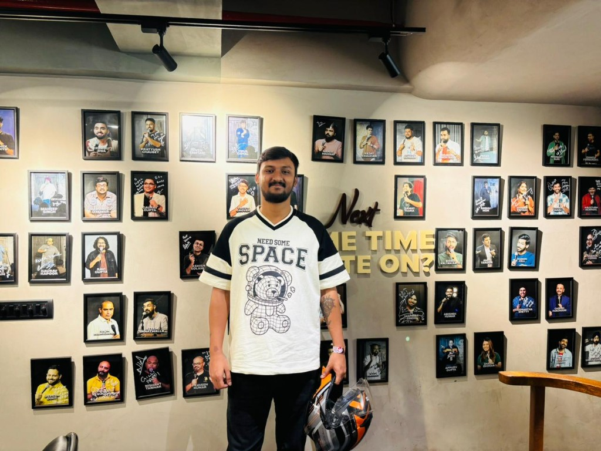

About me
I'm Abhimanyu, a Product Designer with 5+ years of experience shaping interfaces for new and emerging markets in India, across gaming, food, commerce, and emergency response products.
My work spans visual UI craft, product thinking, and close collaboration with engineering and management. I enjoy translating business goals into clear flows, polished screens, and systems that teams can actually ship.
I've grown from designing individual features to owning modules end-to-end, from research and wireframes to high-fidelity UI, prototypes, and design handoff. Working with developers taught me HTML and CSS basics, which helps me bridge design and implementation.
Today I'm especially curious about AI in design workflows, using intelligent tools to explore faster, personalize experiences, and stay focused on the creative decisions that matter.
At Peak42 in Bangalore, I contribute as a product designer, balancing strong visual design with practical product decisions and cross-functional teamwork.
Process
-
🎯
Understand
Align user needs, business goals, and technical constraints with stakeholders.
-
🔍
Explore
Sketch multiple directions, often accelerated with AI-assisted ideation.
-
✏️
Design
Build clear UI, interaction patterns, and scalable component thinking.
-
⚡
Validate
Test with users, teammates, and data, refine until the flow feels effortless.
-
🚀
Ship & learn
Partner with devs to deliver, measure impact, and iterate in the next cycle.
Tool Kit
Design & Prototyping
AI & Exploration
Collaboration
Code basics
Writing & case studies
Deeper dives on redesigns, AI explorations, and product craft.